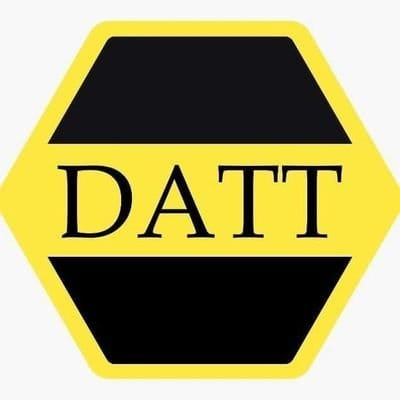

Tus tramites
deTransiweb
mas faciles, rapidos y sin complicaciones.
Transforma los tramites de transito en experiencias mas rapidas, sencillas y accesibles, conectando la tecnologia con las necesidades de la comunidad para hacer mas facil lo que antes parecia complicado.

Todo lo que necesitas para poder realizar tus tramites
Transiweb conecta datos de flota, paraderos y usuarios en un solo tablero, tan simple como leer una pantalla de terminal.
Gestiona tus tramites de transito de forma rapida y eficiente
Solicita y gestiona diferentes servicios de manera rapida, segura y totalmente virtual.
Realiza el traspaso de tu vehiculo de manera agil y segura
Carga los documentos requeridos y consulta el estado de tu solicitud desde cuaquier lugar.
Consulta el estado de tus solicitudes en tiempo real
Ingresa tu numero de tramite y conoce en que estapa se encuentra tu proceso.
Realiza tus pagos de forma rapida, segura y organizada
Consulta el valor de tu tramite y realiza el pago utilizando los medios disponibles.
Toda tu dodumentacion organizada en un solo lugar
Envia los documentos necesarios para cada tramite y manten toda tu informacion organizada,
Una gestion mas eficiente para los organismos de transito
Los funcionarios pueden revisar solicitudes, validar documentos, actualizar estados y gestionar usuarios.
De la parada a tu destino, en 4 pasos
El recorrido de un tramite dentro de Transiweb, de principio a fin.
Inicia tu tramite
Seleccionas el tramite que necesitas y completas tus datos.
Carga tus documentos
Adjuntas los documentos requqeridos de forma rapida y segura.
Verificamos tu solicitud
Transiwed revisa la informacion y te mantiene actualizado sobre el proceso.
Tramite completado
Recibes la confirmacion y puedes consultar el resultado sin desplazamientos.
Menos filas, menos tiempo perdido y mas facilidad para realizar tus tramites.
Crear cuenta gratis